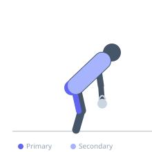

Exercise guide / Kettlebell American Swing (Overhead)
Kettlebell American Swing (Overhead)
The kettlebell American swing extends the traditional Russian swing by swinging the kettlebell fully overhead to lockout, rather than stopping at shoulder height. This demands greater shoulder stability and hip power through a larger arc. The overhead finish requires the core and lats to stabilize forcefully at the top. It is popular in CrossFit and conditioning contexts, though it demands solid shoulder mobility and strength before attempting.
Primary muscles
gluteus maximus
biceps femoris long head
Secondary muscles
erector spinae
deltoid anterior
latissimus dorsi
Stabilizers
transverse abdominis
deltoid posterior
Equipment
Kettlebell


Starting position
- Stand with feet hip- to shoulder-width, kettlebell on the floor between feet. Hinge at the hips, grab the handle with both hands, tilt the bell back.
Setup
- Confirm full shoulder flexion range before attempting. Use a lighter kettlebell than your Russian swing weight.
Steps
- Step 1: Hike the kettlebell back between the legs with a hip hinge.
- Step 2: Drive the hips explosively forward, standing tall, and let the bell swing upward.
- Step 3: Continue the arc overhead until the bell is fully above the head, arms locked, biceps near the ears.
- Step 4: Control the descent, let the bell swing back between the legs, and repeat.
Coaching cues
- Power from the hips
- Lock out overhead — squeeze everything
- Control the downswing
Breathing
- Exhale sharply at hip extension, inhale on the downswing.
Range of motion
- Full hip hinge to full overhead lockout with straight arms.
Tempo
- Ballistic — controlled descent
Common mistakes
- Squatting instead of hinging
- Pressing the kettlebell overhead with arm strength rather than hip drive
- Lumbar hyperextension at lockout
Safety
- Requires overhead shoulder mobility — screen before prescribing
- Do not attempt with shoulder impingement
Training
- power: 5–10 reps
- endurance: 15–30 reps
- power: 4–6 sets
- endurance: 3–5 sets
- Rest: {'strength': 120, 'hypertrophy': 60, 'endurance': 30}